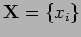
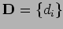
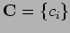
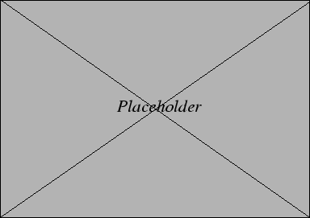
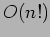

A constraint satisfaction problem (CSP) comprises:- A set  of variables over a set of domains  these may be continuous or discrete and bounded or unbounded and a set  of constraints on and between the variables that restrict the possible value assignments. A solution comprises an assignment of values from to all the variables in subject to . Further in an optimization problem the solution should maximize an objective function . A CSP may be represented as a directed graph in which the arcs represent constraint relationships between the variables represented as nodes. To represent a scheduling problem as a CSP the variables are identified as the tasks to be assigned time-slots from domains of available times. The objective function is a measure of the quality of the schedule.
|

|
Solving scheduling as a CSP - 2 techniques have evolved - constructive techniques based on backtracking search from starting from an empty schedule, build up partial schedule by selecting a task and assigning a value from its available domain, check for consistency then onto next task. Keep going till hit deadend - no assignment of variable will allow progress. Then backtrack to last decision (assignment) and change. Uninformed backtracking typically requires . In contrast, the repair technique starts with a fully built but typically inconsistent and suboptimal schedule. The technique then involves an iterative cycle of task retraction and re-assignment until all tasks are assigned and all constraints are satisfied. If optimization is required the objective function is measured at each cycle to check for improvment. The objective may also guide the search heuristics.